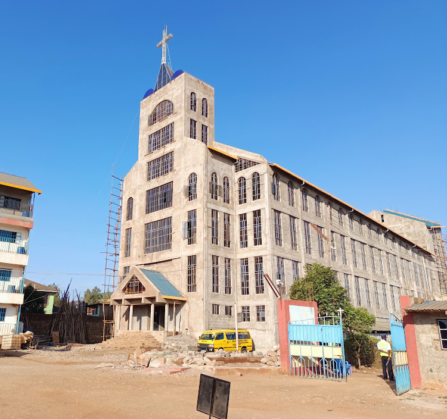

Christ’s Love Family Fellowship Church, Ngoingwa
Where Everybody Is Somebody and Jesus Christ Is Lord
| Reaching the world with the Gospel of Jesus Christ
Join Us.jpg)
A Church Serving the Body of Christ, Located in Ngoingwa
Ngoingwa, Thika, Kenya
Service Times and Locations
MONDAY
6:30 P.M. - 8:00 P.M. Youth Fellowship
TUESDAY
7:00 P.M. - 8:00 P.M. Home Fellowships (Based on Zones)
FRIDAY
6:00 P.M. - 8:00 P.M. Friday Prayers (CLFF Cathedral)
SUNDAY
9:30 A.M. Worship Service (CLFF Ngoingwa Cathedral)
11:00 A.M. Main Service (CLFF Ngoingwa Cathedral)
.png)
KNOW MORE ABOUT CLFF
Trusted Spiritual Community
At Christ’s Love Family Fellowship Church, we aim to build a welcoming community centered around faith and love. Our church is a place for everyone to grow spiritually, find support, and share in God’s love.
We believe in helping each other and making a positive impact in Ngoingwa. Join us for worship, fellowship, and outreach as we spread hope and kindness together.Books by Bishop Dr. George Kamau
To access these books, download the app:
Victory Through Deliverance of the Mind
Practical guidance for overcoming mental strongholds through spiritual deliverance.
Victory Through Biblical Mysteries
An inspiring book about unlocking spiritual victory through biblical mysteries.
Fatherhood: Whose Son are You?
Deep insights into the impact of fatherhood on personal identity and destiny.